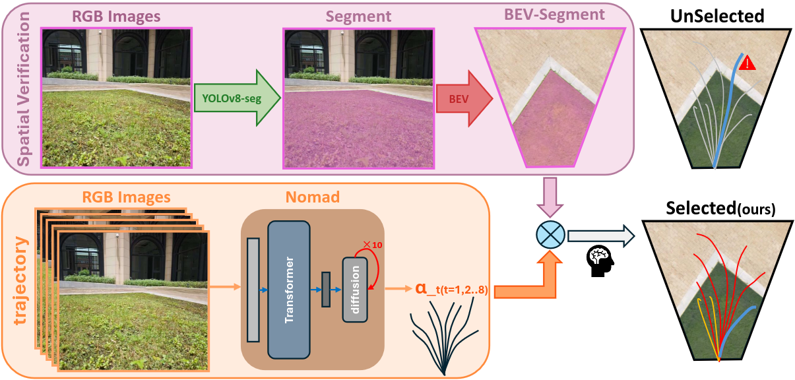
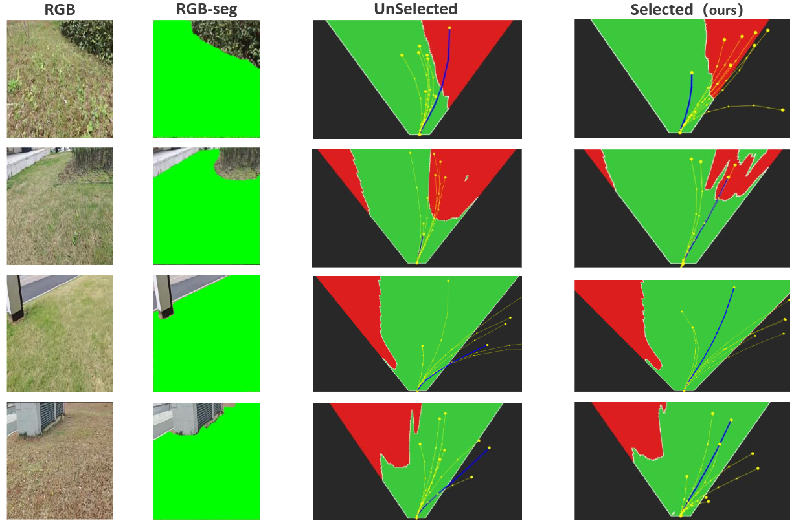

基于扩散模型生成轨迹假设，通过语义分割构建 BEV 可行性空间，
在控制执行前进行严格的空间验证与过滤。

广泛的户外实车验证表明，SVD 系统能将边界违规率从 26% 显著降至 8%，
并在嵌入式设备上维持实时推理要求。

全地形车模结合大算力边缘节点，实现端到端的感知、规划与控制全闭环。
1800KV无刷动力与大扭矩舵机，提供卓越的复杂户外地形适应能力与底盘稳定性。
大视场角全局快门深度相机，强光环境下依然保持出色的环境感知与高频捕捉能力。
提供 40 TOPS 原生 AI 算力，完美承载 Diffusion 模型的高频推理与系统部署需求。